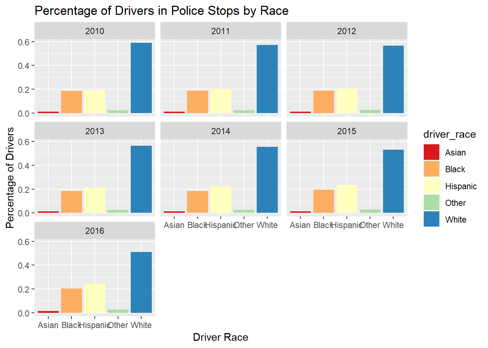
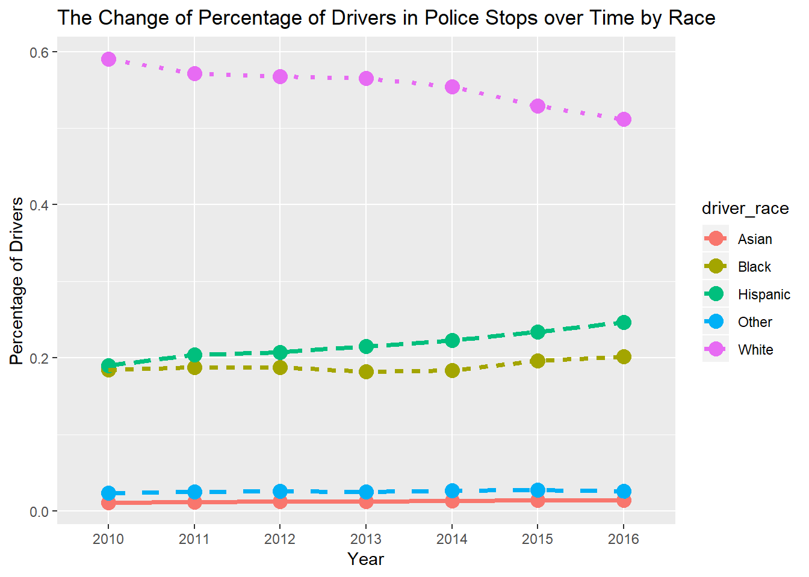
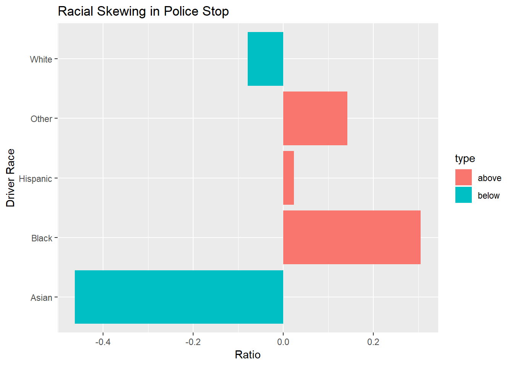
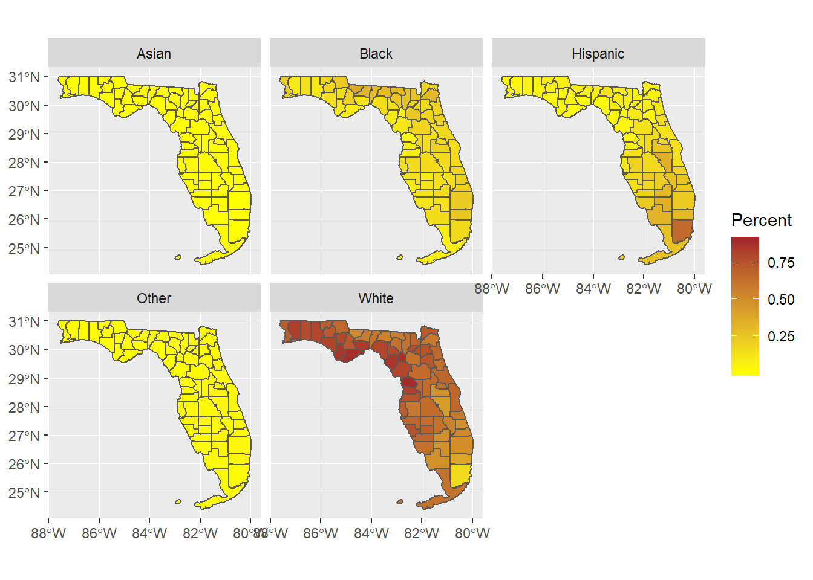
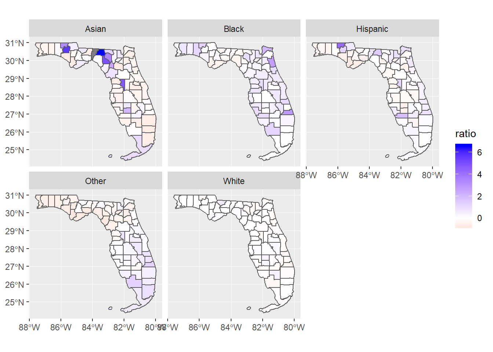

A traffic stop, commonly called being pulled over, is a temporary detention of a driver of a vehicle by police to investigate a possible crime or minor violation of law (https://en.wikipedia.org/wiki/Traffic_stop). Police traffic stop is an extremely effective tool for law enforcement in various situations. In 2010, a routine traffic stop resulted in the arrest of the driver, who did several robberies in Miami-Dade County, and the recovery of a firearm. However, there are some issues existing in police traffic stop.
On June 15, 2015, Breaion King, a 26-year-old African-American elementary school teacher was stopped by a police officer in Austin, Texas. It should have been a routine traffic stop, but escalated into a dramatic arrest. King was pulled from her car and thrown to the ground by the officer, which was caught by police dash cams. En route to jail, King engaged her escorting officer in a revealing conversation about race and law enforcement in America. This incident was later made into an Oscar nominated documentary named Traffic Stop.
Regardless of the behaviors of both sides, this event does reveal some racial issues in police traffic stops. Specifically, this project intends to focus on the bellowing problems: > Whether racial skewing exists in police stops.
If it exists, how does it distribute spatially.
If it exists, how does it change over time (by year).
library(dplyr)
library(tidyr)
library(purrr)
library(ggplot2)
library(RColorBrewer)
library(sf)Read police stop data of Florida. The data is from the Stanford Open Policing Project. It has records of stop date, stop location, driver race, driver gender and so on. Then generate field year from the field stop_date in the raw data. After doing this, we get the data_filtered.
raw <- read.csv("data/FL_cleaned.csv")
#remove race = ""
data_filtered <- raw %>%
filter(driver_race != "") %>%
mutate(year = substr(stop_date,1,4))Tidy data_filtered to calculate the percentage of drivers (% Drivers) by race in police stop. Then we get data1, which is used to draw graphs later.
data1 <- data_filtered %>%
group_by(year, driver_race) %>%
summarise(SumByRaceYear = n()) %>%
nest(- year) %>%
mutate(SumByYear = map(data, ~ sum(.$SumByRaceYear))) %>%
unnest(SumByYear) %>%
unnest(data) %>%
mutate(Percent = SumByRaceYear / SumByYear)
data1## # A tibble: 35 x 5
## year SumByYear driver_race SumByRaceYear Percent
## <chr> <int> <fct> <int> <dbl>
## 1 2010 675109 Asian 7626 0.0113
## 2 2010 675109 Black 124668 0.185
## 3 2010 675109 Hispanic 128240 0.190
## 4 2010 675109 Other 15897 0.0235
## 5 2010 675109 White 398678 0.591
## 6 2011 869799 Asian 10527 0.0121
## 7 2011 869799 Black 163210 0.188
## 8 2011 869799 Hispanic 177359 0.204
## 9 2011 869799 Other 21563 0.0248
## 10 2011 869799 White 497140 0.572
## # ... with 25 more rowsFor a racial group A, it is possible to compare its percentage of drivers in police stop with its percentage of population in FL to examine racial skewing in police stop. Here, we define a variable ratio: \[\displaystyle ratio = \frac{\text{% Drivers in racial group A}}{\text{% Population in racial group A}} - 1\] The derived variable ratio can be used to indicate racial skewing in police stop. If \(ratio > 0\), people in racial group A are more likely to be stopped by police. This implies that racial skewing exists in police stop.
The field driver_race in police stop data classifies driver ethinicity into five racial groups, namely White, Black, Hispanic, Asian and Other.
levels(data1$driver_race)## [1] "" "Asian" "Black" "Hispanic" "Other" "White"So we can evaluate ratio for each of the five racial groups. Then dataset data2 is derived.
pop <- read.csv("data/FL_pop.csv")
pop_percent <- pop %>%
summarise(year = "2016", total = sum(Total),white = sum(White),black = sum(Black),asian = sum(Asian),hispanic = sum(Hispanic),other = sum(Other)) %>%
mutate(pW = white/total, pB = black/total, pA = asian/total, pH = hispanic/total, pO = other/total)
#calculate ratio
data2 <- data1 %>% filter(year == "2016")
data2$ratio <- data2[data2$driver_race == "Asian",]$Percent / pop_percent$pA
data2[data2$driver_race == "Black",]$ratio <- data2[data2$driver_race == "Black",]$Percent / pop_percent$pB
data2[data2$driver_race == "Hispanic",]$ratio <- data2[data2$driver_race == "Hispanic",]$Percent / pop_percent$pH
data2[data2$driver_race == "Other",]$ratio <- data2[data2$driver_race == "Other",]$Percent / pop_percent$pO
data2[data2$driver_race == "White",]$ratio <- data2[data2$driver_race == "White",]$Percent / pop_percent$pW
data2$ratio <- data2$ratio - 1
data2$type <- ifelse(data2$ratio > 0, "above","below")
data2## # A tibble: 5 x 7
## year SumByYear driver_race SumByRaceYear Percent ratio type
## <chr> <int> <fct> <int> <dbl> <dbl> <chr>
## 1 2016 581316 Asian 8009 0.0138 -0.463 below
## 2 2016 581316 Black 117186 0.202 0.305 above
## 3 2016 581316 Hispanic 143423 0.247 0.0232 above
## 4 2016 581316 Other 15223 0.0262 0.142 above
## 5 2016 581316 White 297475 0.512 -0.0794 belowIn order to explore racial skewing in police stop spatially, we have to join our police stop data data_filtered and spatial data map. Then calculate the percentage of drivers in different racial groups by county. By dong this, we get map_data.
map <- st_read("data/FL.shp")## Reading layer `FL' from data source `C:\Users\ruizh\Documents\geo503-2018-finalproject-zero12r\data\FL.shp' using driver `ESRI Shapefile'
## Simple feature collection with 67 features and 2 fields
## geometry type: MULTIPOLYGON
## dimension: XY
## bbox: xmin: -87.6349 ymin: 24.39631 xmax: -79.97431 ymax: 31.00097
## epsg (SRID): 4269
## proj4string: +proj=longlat +datum=NAD83 +no_defs#remove records where "countyfips" = NA
data_bycounty <- data_filtered %>%
filter(is.na(county_fips) == F) %>%
group_by(county_fips,driver_race) %>%
summarise(SumByRaceCounty = n()) %>%
nest(- county_fips) %>%
mutate(SumByCounty = map(data, ~ sum(.$SumByRaceCounty))) %>%
unnest(SumByCounty) %>%
unnest(data)%>%
mutate(Percent = SumByRaceCounty / SumByCounty)
data_bycounty$county_fips <- factor(data_bycounty$county_fips)
map_data <- left_join(map, data_bycounty, by=c("GEOID" = "county_fips"))
head(map_data)## Simple feature collection with 6 features and 6 fields
## geometry type: MULTIPOLYGON
## dimension: XY
## bbox: xmin: -84.73785 ymin: 28.43329 xmax: -82.05447 ymax: 30.3035
## epsg (SRID): 4269
## proj4string: +proj=longlat +datum=NAD83 +no_defs
## GEOID NAME SumByCounty driver_race SumByRaceCounty Percent
## 1 12053 Hernando 87413 Asian 828 0.009472275
## 2 12053 Hernando 87413 Black 5793 0.066271607
## 3 12053 Hernando 87413 Hispanic 6891 0.078832668
## 4 12053 Hernando 87413 Other 1475 0.016873920
## 5 12053 Hernando 87413 White 72426 0.828549529
## 6 12129 Wakulla 37462 Asian 178 0.004751482
## geometry
## 1 MULTIPOLYGON (((-82.55258 2...
## 2 MULTIPOLYGON (((-82.55258 2...
## 3 MULTIPOLYGON (((-82.55258 2...
## 4 MULTIPOLYGON (((-82.55258 2...
## 5 MULTIPOLYGON (((-82.55258 2...
## 6 MULTIPOLYGON (((-84.50434 3...Based on the dataset map_data and above equation evaluating ratio, we calculate ratio for each racial group by county.
pop_percent_bycounty <- pop %>%
mutate(pW = White/Total, pB = Black/Total, pA = Asian/Total, pH = Hispanic/Total, pO = Other/Total)
pop_percent_bycounty$GEOID <- factor(pop_percent_bycounty$GEOID)
#calculate ratio by county
map_data2 <- left_join(map_data,pop_percent_bycounty,by="GEOID")
map_data2$ratio <- 0
map_data2[map_data2$driver_race == "Asian",]$ratio <- map_data2[map_data2$driver_race == "Asian",]$Percent / map_data2[map_data2$driver_race == "Asian",]$pA
map_data2[map_data2$driver_race == "Black",]$ratio <- map_data2[map_data2$driver_race == "Black",]$Percent / map_data2[map_data2$driver_race == "Black",]$pB
map_data2[map_data2$driver_race == "Hispanic",]$ratio <- map_data2[map_data2$driver_race == "Hispanic",]$Percent / map_data2[map_data2$driver_race == "Hispanic",]$pH
map_data2[map_data2$driver_race == "Other",]$ratio <- map_data2[map_data2$driver_race == "Other",]$Percent / map_data2[map_data2$driver_race == "Other",]$pO
map_data2[map_data2$driver_race == "White",]$ratio <- map_data2[map_data2$driver_race == "White",]$Percent / map_data2[map_data2$driver_race == "White",]$pW
map_data2$ratio <- map_data2$ratio - 1
head(map_data2)## Simple feature collection with 6 features and 19 fields
## geometry type: MULTIPOLYGON
## dimension: XY
## bbox: xmin: -84.73785 ymin: 28.43329 xmax: -82.05447 ymax: 30.3035
## epsg (SRID): 4269
## proj4string: +proj=longlat +datum=NAD83 +no_defs
## GEOID NAME SumByCounty driver_race SumByRaceCounty Percent
## 1 12053 Hernando 87413 Asian 828 0.009472275
## 2 12053 Hernando 87413 Black 5793 0.066271607
## 3 12053 Hernando 87413 Hispanic 6891 0.078832668
## 4 12053 Hernando 87413 Other 1475 0.016873920
## 5 12053 Hernando 87413 White 72426 0.828549529
## 6 12129 Wakulla 37462 Asian 178 0.004751482
## Name Total White Black Asian Hispanic Other
## 1 Hernando County, Florida 176797 141603 8607 1914 20459 4214
## 2 Hernando County, Florida 176797 141603 8607 1914 20459 4214
## 3 Hernando County, Florida 176797 141603 8607 1914 20459 4214
## 4 Hernando County, Florida 176797 141603 8607 1914 20459 4214
## 5 Hernando County, Florida 176797 141603 8607 1914 20459 4214
## 6 Wakulla County, Florida 31314 24754 4698 128 1152 582
## pW pB pA pH pO
## 1 0.8009355 0.04868295 0.010825976 0.11572029 0.02383525
## 2 0.8009355 0.04868295 0.010825976 0.11572029 0.02383525
## 3 0.8009355 0.04868295 0.010825976 0.11572029 0.02383525
## 4 0.8009355 0.04868295 0.010825976 0.11572029 0.02383525
## 5 0.8009355 0.04868295 0.010825976 0.11572029 0.02383525
## 6 0.7905090 0.15002874 0.004087629 0.03678866 0.01858594
## geometry ratio
## 1 MULTIPOLYGON (((-82.55258 2... -0.12504187
## 2 MULTIPOLYGON (((-82.55258 2... 0.36128980
## 3 MULTIPOLYGON (((-82.55258 2... -0.31876538
## 4 MULTIPOLYGON (((-82.55258 2... -0.29206016
## 5 MULTIPOLYGON (((-82.55258 2... 0.03447717
## 6 MULTIPOLYGON (((-84.50434 3... 0.16240540After data process, we have four datasets:
data1 to display the percentage of drivers in police stop by raceggplot(data1, aes(driver_race, Percent)) +
geom_col(aes(fill = driver_race)) +
facet_wrap(~year) +
scale_fill_brewer(palette = "Spectral") +
#scale_fill_manual(values = wes_palette("Darjeeling2",5))
labs(title="Percentage of Drivers in Police Stops by Race",
x="Driver Race", y="Percentage of Drivers")
ggplot(data1, aes(year, Percent, group = driver_race, colour = driver_race)) +
geom_point(size = 4) +
geom_line(aes(linetype = driver_race),size = 1.3) +
labs(title="The Change of Percentage of Drivers in Police Stops over Time by Race",
x="Year", y="Percentage of Drivers")
data2 to display racial skewing in police stopggplot(data2, aes(driver_race,ratio)) +
geom_col(aes(fill = type)) +
coord_flip() +
labs(title="Racial Skewing in Police Stop",
x="Driver Race", y="Ratio")
map_data to display the distributions of %Drivers by race#devtools::install_github("tidyverse/ggplot2")
ggplot(map_data) +
geom_sf(aes(fill = Percent)) +
facet_wrap(~driver_race) +
scale_fill_gradient(low = "yellow", high = "brown")
map_data2 to display the distribution of racial skewingggplot(map_data2) +
geom_sf(aes(fill = ratio)) +
scale_fill_gradient2(low = "red",mid = "white",high = "blue",midpoint = 0)+
facet_wrap(~driver_race)
What have you learned? Are there any broader implications?